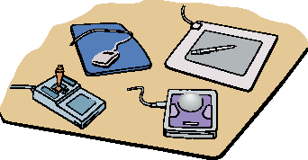
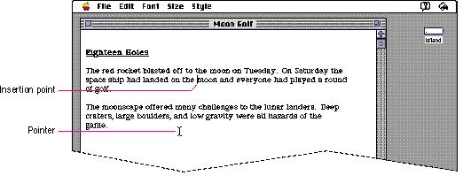

|
|
The Pointing DeviceIn some computer systems, the keyboard is the primary input device. People type in commands and the computer responds with typed responses or prompts. In the Macintosh interface, the pointing device is central to the user's input. A pointing device makes possible the direct manipulation that is an important aspect of the interface. The user communicates with the computer by manipulating graphic objects on the screen. The user can grab (or seem to grab) an object, then indicate what is to be done with it. The user accomplishes this interaction with the pointing device.In the Macintosh interface the standard pointing device is the mouse. There are other pointing devices, such as trackballs and stylus pens, that perform the same functions. Figure 10-1 shows several different pointer devices. Figure 10-1 Different pointing devices  The mouse is a hand-held device, usually (but not necessarily) connected to the computer by a long, flexible cable. There's a single button on the mouse. The user holds the mouse and rolls it on a flat, smooth surface. On the screen, a pointer, which can assume different shapes according to the context of the application, follows the motion of the mouse. Simply moving the mouse (without pressing the mouse button) just moves the pointer. Most actions take place only when the user positions the pointer over an object on the screen, then presses and releases the mouse button. Traditional character-oriented command-line interfaces rely on a cursor to indicate the place on the display where the next character that is typed will appear. The user uses arrow keys (sometimes called cursor keys) to move the cursor around the screen. Because there is nothing else to point at, no pointer is needed. In the Macintosh interface, there may be many graphic objects on the screen, unrelated to the text insertion point. Thus there are lots of objects to point at and a pointer is necessary in the interface. The screen pointer is logically attached to the mouse or other pointing device. The user manipulates the pointer to show your application what to do next and where to do it. The place where the next characters to be typed will appear is indicated by an insertion point. In text, the pointer shows where the insertion point will be moved to if the user clicks at that location. Figure 10-2 shows the insertion point and the pointer in a text document. Figure 10-2 The insertion point and the pointer  Each pointer has a hot spot--the portion of the
pointer that must be positioned over a screen object before
mouse clicks can have an effect on |
|
|
As the pointer moves about the screen, it may change shape. For example, in a text-oriented application, the pointer takes the I-beam shape while it's over the text, to show where the insertion point will move to if the mouse button is pressed. When the pointer moves outside of the text, it becomes an arrow. In general, the pointer should change shape only to provide information to the user. In other words, it shouldn't change shape randomly. For example, the pointer could change shape to give feedback on the range of activities that make sense either in a particular area of the screen or in a current mode. If the result of mouse actions depends on the item under the pointer when the user presses the mouse button, the pointer could change shape depending on the object. Where an application uses modes for different functions, the pointer could be a different shape in each mode. Table 10-1 shows some examples of pointers and their effects. You can create additional pointers as needed for other contexts. |
|
During a particularly lengthy operation, when the user
can do nothing else but wait until the operation is
completed or switch to another application, |